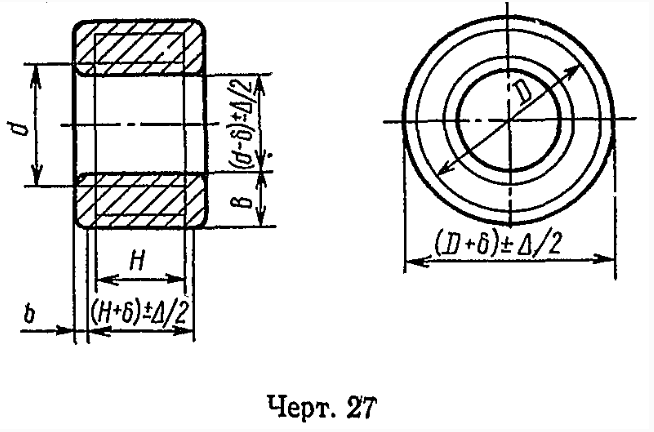

Кольцо раскатное

Припуски и предельные отклонения для поковок типа раскатанных колец следует выбирать в соответствии с таблицей.
Припуски и предельные отклонения для поковок типа раскатанных колец следует выбирать в соответствии с таблицей.

Сегодня, 25 мая, в ИжГТУ имени М.Т. Калашникова, начала работу Всероссийская научно-техническая конференция «Информационные технологии в науке, промышленности и образовании». С приветствием на пленарном заседании к участникам обратился Александр Викторович Губерт, и.о. ректора ИжГТУ имени М.Т. Калашникова: «Конференция стала у нас традиционной, ежегодной. Вопросы, которые рассматриваются на конференции, весьма важны для развития каждой отдельной отрасли — науки, промышленности, образования. Вместе с тем, эта тема сквозная. Мы понимаем, что все процессы связаны между собой. Поэтому хотелось бы, чтобы на конференции обсудили не только текущие задачи, но и поговорили о взаимодействии всех участников этого большого процесса. Хочу пожелать всем нам оптимизма, задора и плодотворной работы. Всем большое спасибо за участие». Модератор заседания, директор Института информатики и вычислительной техники Игорь Олегович Архипов во вступительном слове отметил: «Наша конференция не стоит на месте. Каждый год происходит что-то новое. В этом году у нас появилась новая секция — «Информационная безопасность». С этого года в рамках конференции мы будем ежегодно проводить и олимпиаду по кибербезопасности. А первых победителей, участников и преподавателей, которые готовили студентов, сегодня наградим». С докладами в очном и удаленном формате на пленарном заседании выступили представители науки и бизнеса.